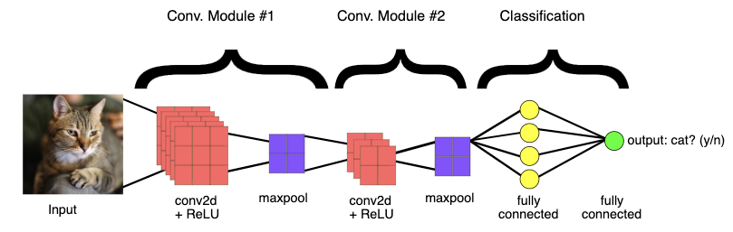

Lecture 7: CNNs in Practice#
Lecture Learning Objectives#
Load image data using
torchvision.datasets.ImageFolder()to train a network in PyTorchExplain what “data augmentation” is and why we might want to do it
Be able to save and re-load a PyTorch model
Tune the hyperparameters of a PyTorch model using Ax
Describe what transfer learning is and the different flavours of it: “out-of-the-box”, “feature extractor”, “fine tuning”
Imports#
import json
import numpy as np
import pandas as pd
from collections import OrderedDict
import torch
import torchvision
from torch import nn, optim
from torchvision import transforms, models, datasets
from torchsummary import summary
from PIL import Image
from sklearn.linear_model import LogisticRegression
from sklearn.preprocessing import StandardScaler
from utils.plotting import *
from utils.set_seed import *
set_seed(1)
# !conda install -y memory_profiler
import memory_profiler
Recap#
A Convolutional Neural Network (CNN) is a specialized type of neural network architecture predominantly used for image classification tasks.
The typical structure of a CNNs
Several convolutional and pooling layers:
Convolutional layers (referred to as Conv2d layers in PyTorch) use filters or kernels to capture spatial hierarchies and patterns within the data.
Activation functions are employed to introduce non-linearities into the model.
Pooling layers are used to reduce the spatial dimensions of the feature maps, helping in decreasing the complexity of the model.
Dropout layers (optional) can be incorporated for regularization in order to prevent overfitting.
Followed by a fully connected (dense) layer that leads to the output.
For binary classification: Use Sigmoid activation if using
BCELoss
Loss function
Multiclass classification:
CrossEntropyLossBinary classification:
BCEWithLogitsLossloss or use Sigmoid if usingBCELossFor regression: No activation and MSELoss
Parameters of the model and parameter sharing
The kernels (or filters) used in convolutional layers, along with their corresponding biases, and the weights (and biases) in the fully connected layers after flattening, constitute the parameters of the CNN model.
CNNs use of the same convolutional filters across the entire input, allowing the network to detect features regardless of their spatial location and significantly reducing the number of parameters. This is known as parameter sharing.

1. Datasets, Dataloaders, and Transforms#
1.1 Preparing Data#
torchandtorchvisionprovide out-of-the-box functionality for loading in lots of different kinds of data.The way you create a dataloader depends on the data you have (i.e., do you have numpy arrays, tensors, images, or something else?) and the PyTorch docs can help you out
Loading data into PyTorch is usually a two-step process:
Create a
dataset(this is your raw data)Create a
dataloader(this will help you batch your data)
Working with CNNs and images, you’ll mostly be using
torchvision.datasets.ImageFolder()(docs), it’s very easy to use-
It assumes you have a directory structure with sub-directories for each class like this:
data
│
├── class_1
│ ├── image_1.png
│ ├── image_2.png
│ ├── image_3.png
│ └── etc.
└── class_2
├── image_1.png
├── image_2.png
├── image_3.png
└── etc.
For example, consider the training dataset I have in the current directory at
lectures/data/eva_bitmoji_rgb:
eva_bitmoji_rgb
└── train
├── not_eva
│ ├── image_1.png
│ ├── image_2.png
│ ├── image_3.png
│ └── etc.
└── eva
├── image_1.png
├── image_2.png
├── image_3.png
└── etc.
TRAIN_DIR = "data/eva_bitmoji_rgb/train/"
mem = memory_profiler.memory_usage()[0]
train_dataset = torchvision.datasets.ImageFolder(root=TRAIN_DIR)
print(f"Memory consumed: {memory_profiler.memory_usage()[0] - mem:.0f} MB")
Memory consumed: -1 MB
Notice how our memory usage is the same, we aren’t loading anything in yet, just making PyTorch aware of what kind of data we have and where it is
We can now check various information about our
train_dataset:
print(f"Classes: {train_dataset.classes}")
print(f"Class count: {train_dataset.targets.count(0)}, {train_dataset.targets.count(1)}")
print(f"Samples:",len(train_dataset))
print(f"First sample: {train_dataset.samples[0]}")
Classes: ['eva', 'not_eva']
Class count: 1018, 1020
Samples: 2038
First sample: ('data/eva_bitmoji_rgb/train/eva/Eva_10039954 copy.png', 0)
Now, we could start working with this dataset directly
For example, here’s the first sample:
gen = iter(train_dataset)
img, target = next(gen)
print(f"Class: {train_dataset.classes[target]}")
img
Class: eva
But often we want to apply some pre-processing to our data
For example,
ImageFolderloads our data using thePILpackage, but we need tensors
print(f"Image data type: {type(img)}")
print(f" Image size: {img.size}")
Image data type: <class 'PIL.Image.Image'>
Image size: (199, 199)
Any pre-processing we wish to apply to our images is done using
torchvision.transformsThere are a lot of transformation options here, but we’ll explore some more later. For now, we’ll
Resize()our images and convert themToTensor()We use
transforms.Compose()to chain multiple transformations together:
IMAGE_SIZE = (64, 64)
data_transforms = transforms.Compose([
transforms.Resize(IMAGE_SIZE),
transforms.ToTensor()
])
train_dataset = torchvision.datasets.ImageFolder(root=TRAIN_DIR, transform=data_transforms)
img, target = next(iter(train_dataset))
print(f"Image data type: {type(img)}")
print(f" Image size: {img.shape}")
Image data type: <class 'torch.Tensor'>
Image size: torch.Size([3, 64, 64])
Great, but there’s one more issue: we want to work with batches of data, because most of the time, we won’t be able to fit an entire dataset into RAM at once (especially when it comes to image data)
This is where PyTorch’s
dataloadercomes inIt allows us to specify how we want to batch our data:
BATCH_SIZE = 64
mem = memory_profiler.memory_usage()[0]
train_loader = torch.utils.data.DataLoader(
train_dataset, # our raw data
batch_size=BATCH_SIZE, # the size of batches we want the dataloader to return
shuffle=True, # shuffle our data before batching
drop_last=False # don't drop the last batch even if it's smaller than batch_size
)
print(f"Memory consumed: {memory_profiler.memory_usage()[0] - mem:.0f} MB")
Memory consumed: 0 MB
Once again, we aren’t loading anything yet, we just prepared the loader
We can now query the loader to return a batch of data (this will consume memory):
mem = memory_profiler.memory_usage()[0]
imgs, targets = next(iter(train_loader))
print(f" # of batches: {len(train_loader)}")
print(f" Image data type: {type(imgs)}")
print(f" Image batch size: {imgs.shape}") # dimensions are (batch size, image channels, image height, image width)
print(f" Target batch size: {targets.shape}")
print(f" Batch memory: {memory_profiler.memory_usage()[0] - mem:.2f} MB") # memory usage after loading batch
# of batches: 32
Image data type: <class 'torch.Tensor'>
Image batch size: torch.Size([64, 3, 64, 64])
Target batch size: torch.Size([64])
Batch memory: 7.46 MB
1.2 Saving and Loading PyTorch Models#
The PyTorch documentation about saving and loading models is fantastic and the process is very easy
It’s common PyTorch convention to save models using either a
.ptor.pthfile extensionIt is recommended that you just save your model learned parameters from
model.state_dict():
# Save model
PATH = "models/eva_cnn.pt"
torch.save(model.state_dict(), PATH) # save model at PATH
# Load model
model = MyModelClass() # create an instance of the model
model.load_state_dict(torch.load(PATH)) # load model from PATH
If you’re using the model for inference (not training), make sure to switch it to eval mode:
model.eval()There are other options for saving models, in particular, if you want to save a model and continue training it later, you’ll want to save other necessary information like the optimizer state, the epoch you’re on, etc. This is all documented here in the PyTorch docs.
Let’s see an example of a model I saved earlier:
class bitmoji_CNN(nn.Module):
def __init__(self):
super().__init__()
self.main = nn.Sequential(
nn.Conv2d(3, 8, (5, 5)),
nn.ReLU(),
nn.MaxPool2d((2, 2)),
nn.Conv2d(8, 4, (3, 3)),
nn.ReLU(),
nn.MaxPool2d((3, 3)),
nn.Dropout(0.2),
nn.Flatten(),
nn.Linear(324, 128),
nn.ReLU(),
nn.Linear(128, 1)
)
def forward(self, x):
out = self.main(x)
return out
PATH = "models/eva_cnn.pt"
model = bitmoji_CNN()
model.load_state_dict(torch.load(PATH))
model.eval()
bitmoji_CNN(
(main): Sequential(
(0): Conv2d(3, 8, kernel_size=(5, 5), stride=(1, 1))
(1): ReLU()
(2): MaxPool2d(kernel_size=(2, 2), stride=(2, 2), padding=0, dilation=1, ceil_mode=False)
(3): Conv2d(8, 4, kernel_size=(3, 3), stride=(1, 1))
(4): ReLU()
(5): MaxPool2d(kernel_size=(3, 3), stride=(3, 3), padding=0, dilation=1, ceil_mode=False)
(6): Dropout(p=0.2, inplace=False)
(7): Flatten(start_dim=1, end_dim=-1)
(8): Linear(in_features=324, out_features=128, bias=True)
(9): ReLU()
(10): Linear(in_features=128, out_features=1, bias=True)
)
)
Saving the entire model You can also save the entire model using
torch.save(model, filepath), which serializes the entire model object using Python’spicklemodule and saves it to a file. It includes not just the model’sstate_dictbut also its class definition and all the hyperparameters.Checkpointing during training: For long-running training, you might want to save more than just the model’s state_dict. Checkpoints typically include the model’s state_dict, the optimizer’s state_dict, and other variables like the current epoch number.
1.3 Data Augmentation#
Data augmentation is used for two main purposes:
Make your CNN more robust to certain variations in the dataset (e.g. scaling, rotation)
Increase the size of your training set
Let’s explore point 1 a bit further. We can see below is a Bitmoji of Eva, does the CNN I loaded above predict this?
image = Image.open('img/test-examples/eva-picnic.png')
image

IMAGE_SIZE = (64, 64)
image_tensor = transforms.functional.to_tensor(image.resize(IMAGE_SIZE)).unsqueeze(0)
prediction = int(torch.sigmoid(model(image_tensor)) > 0.5)
print(f"Prediction: {train_dataset.classes[prediction]}")
[W NNPACK.cpp:64] Could not initialize NNPACK! Reason: Unsupported hardware.
Prediction: eva
But what happens if I flip my image? Can our CNN still correctly classify the image?
image_rotated = image.rotate(180)
image_rotated

image_tensor = transforms.functional.to_tensor(image_rotated.resize(IMAGE_SIZE)).unsqueeze(0)
prediction = int(torch.sigmoid(model(image_tensor)) > 0.5)
print(f"Prediction: {train_dataset.classes[prediction]}")
Prediction: not_eva
This was just 1 example
Let’s see what happens if we vertically flip all images in our dataset, and then compute accuracy.
Here’s a helper function to compute accuracy:
def evaluate(model, valid_loader):
"""Validation wrapper for PyTorch network."""
model.eval()
accuracy = 0
with torch.no_grad():
for X, y in valid_loader:
y_hat = model(X).flatten()
y_hat_labels = torch.sigmoid(y_hat) > 0.5
accuracy += (y_hat_labels == y).type(torch.float32).mean().item()
accuracy /= len(valid_loader) # avg accuracy
return accuracy
Now let’s feed the flipped version of the validation set to our model and compute accuracy:
TRAIN_DIR = "data/eva_bitmoji_rgb/train/"
VALID_DIR = "data/eva_bitmoji_rgb/valid/"
IMAGE_SIZE = (64, 64)
# Transforms
data_transforms = transforms.Compose([
transforms.RandomVerticalFlip(p=1), # flip all images vertically
transforms.Resize(IMAGE_SIZE),
transforms.ToTensor()
])
valid_dataset = torchvision.datasets.ImageFolder(root=VALID_DIR, transform=data_transforms)
BATCH_SIZE = len(valid_dataset) # want to test on entire validation set
valid_loader = torch.utils.data.DataLoader(valid_dataset, batch_size=BATCH_SIZE, shuffle=True)
evaluate(model, valid_loader)
0.630859375
The model has basically lost its predication capability, and that’s problematic.
We’d like our CNN to be robust against these kinds of differences
We can expose our CNN to rotated images, so that it can learn to better predict them, with data augmentation
Common image augmentations include:
rotation/flipping
cropping
adding noise
You can view others in the PyTorch docs
We add transforms just like we did previously, using the
transformargument oftorchvision.datasets.ImageFolder():
data_transforms = transforms.Compose([
transforms.Resize(IMAGE_SIZE),
transforms.RandomVerticalFlip(p=0.5),
transforms.RandomHorizontalFlip(p=0.5),
transforms.ToTensor()
])
train_dataset_flipped = torchvision.datasets.ImageFolder(root=TRAIN_DIR,
transform=data_transforms)
train_loader_flipped = torch.utils.data.DataLoader(train_dataset_flipped,
batch_size=64,
shuffle=True,
drop_last=False)
sample_batch, target = next(iter(train_loader_flipped))
valid_dataset_flipped = torchvision.datasets.ImageFolder(root=VALID_DIR, transform=data_transforms)
BATCH_SIZE = len(valid_dataset) # want to test on entire validation set
valid_loader_flipped = torch.utils.data.DataLoader(valid_dataset, batch_size=BATCH_SIZE, shuffle=True)
plot_bitmojis(sample_batch, rgb=True)
Here’s a model I trained earlier using augmented data using the following transformations:
data_transforms = transforms.Compose([
transforms.Resize(IMAGE_SIZE),
transforms.RandomVerticalFlip(p=0.5),
transforms.RandomHorizontalFlip(p=0.5),
transforms.ToTensor()
])
device = torch.device('mps' if torch.backends.mps.is_available() else 'cpu') # SOLUTION
device
device(type='mps')
# PATH = "models/eva_cnn_augmented.pt"
# torch.save(model_augmented.state_dict(), PATH) # save model at PATH
Note that I’ve only used vertical and horizontal flipping of the images, instead of rotating by other angles. In the latter case, I would have had to somehow deal with the empty areas of the rotated images (appearing as black areas around the rotated images above).
PATH = "models/eva_cnn_augmented.pt"
model = bitmoji_CNN()
model.load_state_dict(torch.load(PATH))
model.eval();
Let’s try it out on the flipped image:
image_rotated
image_tensor = transforms.functional.to_tensor(image_rotated.resize(IMAGE_SIZE)).unsqueeze(0)
prediction = int(torch.sigmoid(model(image_tensor)) > 0.5)
print(f"Prediction: {train_dataset.classes[prediction]}")
Prediction: eva
Looking good. Let’s once again compute accuracy for the flipped version of the validation set:
evaluate(model, valid_loader)
0.880859375
This time, the CNN trained with augmented dataset demonstrates similar performance on the rotated version of the bitmojis.
1.4 (Optional) Batch Normalization#
Earlier in the course, we saw how normalizing the inputs to our neural network can help our optimization (by making sure the scale of one feature doesn’t overwhelm others)
But what about the hidden layers of our network? They also have data flowing into them and parameters to optimize, can we normalize them too to make optimization better?
Batch normalization is the normalization of data in hidden layers
It is usually applied before (and sometimes after) the activation function of a hidden layer:
Where:
\(z\) = the output of your hidden layers before/after the activation function
\(\mu = \frac{1}{n}\sum_{i=1}^{n}z_i\) (i.e., the mean of \(z\))
\(\sigma^2 = \frac{1}{n}\sum_{i=1}^{n}(z_i-\mu)^2\) (i.e, the variance of \(z\))
\(\gamma\) and \(\beta\) are parameters that are learned through backpropagation
Batch normalization can help stabilize and speed up optimization, make your network more invariant to changes in the training distribution, and often has a slight regularization effect
Even though we have some guiding intuitions about the mechanics of batch normalization, we still don’t have a widely accepted theory for how exactly this technique works the way it does
“Somewhat shockingly, however, despite its prominence, we still have a poor understanding of what the effectiveness of BatchNorm is stemming from.” (Santurkar et al., 2018)
Read more about this issue here
2. Hyperparameter Tuning#
With neural networks we potentially have a lot of hyperparameters to tune:
Number of layers
Number of nodes in each layer
Activation functions
Regularization
Initialization (starting weights)
Optimization hyperparameters (learning rate, momentum, weight decay)
etc.
When the number of hyperparameters are large and models are expensive to compute, brute force strategies such as grid search perform poorly. In these cases, we need to make our approach smarter. For example, we can use an optimization algorithm instead of blindly evaluating our model for all values of hyperparameters.
There are many packages out there that make neural network hyperparameter tuning fast and easy using such approaches
We’ll be using Ax, created by Facebook (just like PyTorch)
Ax uses Bayesian optimization to tune the hyperparameters of our model (how? see here)
# !conda install -y ax-platform
Below, I’ve adapted a tutorial from their docs:
from ax.service.managed_loop import optimize
from ax.plot.contour import plot_contour
from ax.plot.trace import optimization_trace_single_method
from ax.utils.notebook.plotting import render, init_notebook_plotting
from ax.utils.tutorials.cnn_utils import train, evaluate
First, I’ll create some simple training and validation loaders:
TRAIN_DIR = "data/eva_bitmoji_rgb/train/"
VALID_DIR = "data/eva_bitmoji_rgb/valid/"
IMAGE_SIZE = (64, 64)
BATCH_SIZE = 128
# Transforms
data_transforms = transforms.Compose([transforms.Resize(IMAGE_SIZE), transforms.ToTensor()])
# Load data and create dataloaders
train_dataset = torchvision.datasets.ImageFolder(root=TRAIN_DIR, transform=data_transforms)
train_loader = torch.utils.data.DataLoader(train_dataset, batch_size=BATCH_SIZE, shuffle=True)
valid_dataset = torchvision.datasets.ImageFolder(root=VALID_DIR, transform=data_transforms)
valid_loader = torch.utils.data.DataLoader(valid_dataset, batch_size=BATCH_SIZE, shuffle=True)
# GPU available?
# device = torch.device('cuda' if torch.cuda.is_available() else 'cpu')
device = torch.device('mps' if torch.backends.mps.is_available() else 'cpu')
print(f"Using: {device}")
# Model
model = bitmoji_CNN()
model.to(device);
Using: mps
Now, we need a training function
This function will be re-run multiple times throughout the hyperparameter optimization process, as we wish to train the model on different hyperparameter configurations
The argument
hyperparametersis a dictionary containing the hyperparameters we wish to tune:
def train(model, train_loader, hyperparameters, epochs=10):
"""Training wrapper for PyTorch network."""
criterion = nn.BCEWithLogitsLoss()
optimizer = optim.Adam(model.parameters(),
lr=hyperparameters.get("lr", 0.001),
betas=(hyperparameters.get("beta1", 0.9), 0.999))
for epoch in range(epochs):
for X, y in train_loader:
if device.type in ['cuda', 'mps']:
X, y = X.to(device), y.to(device)
optimizer.zero_grad()
y_hat = model(X).flatten()
loss = criterion(y_hat, y.type(torch.float32))
loss.backward()
optimizer.step()
return model
We also need an
evaluate()function that reports how well our model is doing on some validation dataThis will also be called multiple times during the hyperparameter optimization
We have already defined such a function before in this lecture, but here is its definition again:
def evaluate(model, valid_loader):
"""Validation wrapper for PyTorch network."""
model.eval()
accuracy = 0
with torch.no_grad(): # this stops pytorch doing computational graph stuff under-the-hood and saves memory and time
for X, y in valid_loader:
if device.type in ['cuda', 'mps']:
X, y = X.to(device), y.to(device)
y_hat = model(X).flatten()
y_hat_labels = torch.sigmoid(y_hat) > 0.5
accuracy += (y_hat_labels == y).type(torch.float32).mean().item()
accuracy /= len(valid_loader) # avg accuracy
return accuracy
Let’s make sure our evaluation function is working:
evaluate(model, valid_loader)
0.47265625
The accuracy is bad right now because we haven’t trained our model yet
We then have a wrapper function that puts everything together
Basically each iteration of hyperparameter optimization (i.e., each time we try a new set of hyperparameters), this function is executed. It trains the model using the given hyperparameters, and then evaluates the model’s performance.
def train_evaluate(parameterization):
model = bitmoji_CNN()
model.to(device)
model = train(model, train_loader, hyperparameters=parameterization)
return evaluate(model, valid_loader)
Finally, we use
optimize()to run Bayesian optimization on a hyperparameter dictionaryI ran this on a GPU and have included the output below:
best_parameters, values, experiment, model = optimize(
parameters=[
{"name": "lr", "type": "range", "bounds": [1e-6, 0.4], "log_scale": True, "value_type": 'float'},
{"name": "beta1", "type": "range", "bounds": [0.2, 0.999], "value_type": 'float'},
],
evaluation_function=train_evaluate,
objective_name='accuracy',
total_trials = 20
)
[INFO 01-28 17:25:27] ax.modelbridge.dispatch_utils: Using Bayesian Optimization generation strategy: GenerationStrategy(name='Sobol+GPEI', steps=[Sobol for 5 trials, GPEI for subsequent trials]). Iterations after 5 will take longer to generate due to model-fitting.
[INFO 01-28 17:25:27] ax.service.managed_loop: Started full optimization with 20 steps.
[INFO 01-28 17:25:27] ax.service.managed_loop: Running optimization trial 1...
[INFO 01-28 17:26:28] ax.service.managed_loop: Running optimization trial 2...
[INFO 01-28 17:27:25] ax.service.managed_loop: Running optimization trial 3...
[INFO 01-28 17:28:20] ax.service.managed_loop: Running optimization trial 4...
[INFO 01-28 17:29:13] ax.service.managed_loop: Running optimization trial 5...
[INFO 01-28 17:30:06] ax.service.managed_loop: Running optimization trial 6...
[INFO 01-28 17:31:01] ax.service.managed_loop: Running optimization trial 7...
[INFO 01-28 17:31:57] ax.service.managed_loop: Running optimization trial 8...
[INFO 01-28 17:32:52] ax.service.managed_loop: Running optimization trial 9...
[INFO 01-28 17:33:46] ax.service.managed_loop: Running optimization trial 10...
[INFO 01-28 17:34:41] ax.service.managed_loop: Running optimization trial 11...
[INFO 01-28 17:35:36] ax.service.managed_loop: Running optimization trial 12...
[INFO 01-28 17:36:30] ax.service.managed_loop: Running optimization trial 13...
[INFO 01-28 17:37:25] ax.service.managed_loop: Running optimization trial 14...
[INFO 01-28 17:38:20] ax.service.managed_loop: Running optimization trial 15...
[INFO 01-28 17:39:15] ax.service.managed_loop: Running optimization trial 16...
[INFO 01-28 17:40:08] ax.service.managed_loop: Running optimization trial 17...
[INFO 01-28 17:41:03] ax.service.managed_loop: Running optimization trial 18...
[INFO 01-28 17:41:59] ax.service.managed_loop: Running optimization trial 19...
[INFO 01-28 17:43:01] ax.service.managed_loop: Running optimization trial 20...
best_parameters
{'lr': 0.0015762617170424081, 'beta1': 0.6464455205729447}
means, covariances = values
print(f"Accuracy: {means['accuracy'] * 100:.2f}%")
Accuracy: 86.91%
render(plot_contour(model=model, param_x='lr', param_y='beta1', metric_name='accuracy'))

best_objectives = np.array(
[[trial.objective_mean * 100 for trial in experiment.trials.values()]]
)
best_objective_plot = optimization_trace_single_method(
y=np.maximum.accumulate(best_objectives, axis=1),
title="Model performance vs. # of iterations",
ylabel="Classification Accuracy, %",
)
render(best_objective_plot)

3. (Optional) Explaining CNNs#
CNNs and neural networks in general are primarily used for prediction (i.e., we want the best prediction performance, and we might not care how we get it)
However interpreting why a model makes certain predictions can be useful
Interpreting neural networks is an active area of research and it is difficult to do
There are a few main options:
Captum is a library for specifically interpreting PyTorch models. It’s quite new still but has some great functionality!
Captum contains a variety of state-of-the-art algorithms for interpreting model predictions, see the docs here
# !conda install -y captum
4. Transfer Learning#
In practice, very few people train an entire CNN from scratch because it requires a large dataset, powerful computers, and a huge amount of human effort to train the model.
Instead, a common practice is to download a pre-trained model and fine tune it for your task. This is called transfer learning.
Transfer learning is one of the most common techniques used in the context of computer vision and natural language processing.
It refers to using a model already trained on one task as a starting point for learning to perform another task
There are many famous deep learning architectures out there that have been very successful across a wide range of problems, e.g.: AlexNet, VGG, ResNet, Inception, MobileNet, etc.
Many of these models have been pre-trained on famous datasets like ImageNet [1, 2]
ImageNet is an image dataset that became a very popular benchmark in the field ~10 years ago.
Currently contains ~14 million labelled images with ~21,841 categories
There are various versions with different number of images and classes
ILSVRC, a popular annual competition in computer vision, uses a smaller subset of ImageNet. This subset consists of about 1.2 million training images, 50,000 validation images, and 150,000 testing images across 1,000 categories.
Wikipedia article on ImageNet
Here are some example classes.
with open("data/imagenet_classes.txt") as f:
classes = [line.strip() for line in f.readlines()]
classes[100:110]
['black swan, Cygnus atratus',
'tusker',
'echidna, spiny anteater, anteater',
'platypus, duckbill, duckbilled platypus, duck-billed platypus, Ornithorhynchus anatinus',
'wallaby, brush kangaroo',
'koala, koala bear, kangaroo bear, native bear, Phascolarctos cinereus',
'wombat',
'jellyfish',
'sea anemone, anemone',
'brain coral']
The idea of transfer learning is instead of developing a machine learning model from scratch, you use these available pre-trained models for your tasks either directly or by fine tuning them.
There are three common ways to use transfer learning in computer vision
Using pre-trained models out-of-the-box
Using pre-trained models as feature extractor and training your own model with these features
Starting with weights of pre-trained models and fine-tuning the weights for your task.
We will explore the first two approaches.
4.1 Using pre-trained models out-of-the-box#
Let’s first try one of these models and apply it to our own problem right out of the box

Source: https://cezannec.github.io/Convolutional_Neural_Networks/
We can easily download famous models using the
torchvision.modelsmodule. All models are available with pre-trained weights (based on ImageNet’s 224 x 224 images)Remember this example I showed you in the intro video of DSCI 571?
We used a pre-trained model vgg16 which is trained on the ImageNet data.
We preprocess the given image.
We get prediction from this pre-trained model on a given image along with prediction probabilities.
For a given image, this model will spit out one of the 1000 classes from ImageNet.
def classify_image(img, topn = 4):
clf = vgg16(weights='VGG16_Weights.DEFAULT') # initialize the classifier with VGG16 weights
preprocess = transforms.Compose([
transforms.Resize(299),
transforms.CenterCrop(299),
transforms.ToTensor(),
transforms.Normalize(mean=[0.485, 0.456, 0.406],
std=[0.229, 0.224, 0.225]),])
with open('data/imagenet_classes.txt') as f:
classes = [line.strip() for line in f.readlines()]
img_t = preprocess(img)
batch_t = torch.unsqueeze(img_t, 0)
clf.eval()
output = clf(batch_t)
_, indices = torch.sort(output, descending=True)
probabilities = torch.nn.functional.softmax(output, dim=1)
d = {'Class': [classes[idx] for idx in indices[0][:topn]],
'Probability score': [np.round(probabilities[0, idx].item(),3) for idx in indices[0][:topn]]}
df = pd.DataFrame(d, columns = ['Class','Probability score'])
return df
import torch
from PIL import Image
from torchvision import transforms
from torchvision.models import vgg16
# Predict labels with associated probabilities for unseen images
import glob
images = glob.glob("img/test_img/*.*")
for image in images:
img = Image.open(image)
img.load()
plt.imshow(img)
plt.show()
df = classify_image(img)
print(df.to_string(index=False))
print("--------------------------------------------------------------")
Class Probability score
cheetah, chetah, Acinonyx jubatus 0.983
leopard, Panthera pardus 0.012
jaguar, panther, Panthera onca, Felis onca 0.004
snow leopard, ounce, Panthera uncia 0.001
--------------------------------------------------------------
Class Probability score
tiger cat 0.353
tabby, tabby cat 0.207
lynx, catamount 0.050
Pembroke, Pembroke Welsh corgi 0.046
--------------------------------------------------------------
Class Probability score
macaque 0.714
patas, hussar monkey, Erythrocebus patas 0.122
proboscis monkey, Nasalis larvatus 0.098
guenon, guenon monkey 0.017
--------------------------------------------------------------
Class Probability score
Walker hound, Walker foxhound 0.580
English foxhound 0.091
EntleBucher 0.080
beagle 0.065
--------------------------------------------------------------
We got these predictions without “doing the ML ourselves”.
We are using pre-trained
vgg16model which is available intorchvision.torchvisionhas many such pre-trained models available that have been very successful across a wide range of tasks: AlexNet, VGG, ResNet, Inception, MobileNet, etc.Many of these models have been pre-trained on famous datasets like ImageNet.
So if we use them out-of-the-box, they will give us one of the ImageNet classes as classification.
Let’s try it out on some very different from the training set.
# Predict labels with associated probabilities for unseen images
images = glob.glob("img/UBC_img/*.*")
for image in images:
img = Image.open(image)
img.load()
plt.imshow(img)
plt.show()
df = classify_image(img)
print(df.to_string(index=False))
print("--------------------------------------------------------------")

Class Probability score
fig 0.637
pomegranate 0.193
grocery store, grocery, food market, market 0.041
crate 0.023
--------------------------------------------------------------
Class Probability score
toilet seat 0.171
safety pin 0.060
bannister, banister, balustrade, balusters, handrail 0.039
bubble 0.035
--------------------------------------------------------------
Class Probability score
worm fence, snake fence, snake-rail fence, Virginia fence 0.202
barn 0.036
sorrel 0.033
valley, vale 0.029
--------------------------------------------------------------
Class Probability score
patio, terrace 0.213
fountain 0.164
lakeside, lakeshore 0.097
sundial 0.088
--------------------------------------------------------------
It’s not doing very well here because ImageNet don’t have proper classes for these images.
Here we are using pre-trained models out-of-the-box.
Can we use pre-trained models for our own classification problem with our classes?
Yes!! There are two ways to benefit from transfer learning:
Use a pre-trained network as a “feature extractor” and add new layers to it for your own task
Same as the previous one, but also “fine-tune” the weights of the pre-trained network using your own data
4.2 Using pre-trained models as feature extractors#
In this method, we use a pre-trained model as a “feature extractor” which creates useful features for us that we can use to train some other model
We have two options here:
Add some extra layers to the pre-trained network to suit our particular task
Pass training data through the network and save the output to use as features for training some other model
4.2.1 Approach 1: Adding extra layers to the pre-trained network#
Let’s do approach 1 first. Let’s adapt
DenseNetto predict our bitmoji data. I’m going to load the model, and then “freeze” all of its parameters (we don’t want to update them)
(Optional)
This architecture connects each layer to every other layer in a feed-forward fashion.
The dense connectivity ensures maximum information flow between layers in the network. This connectivity leads to significant improvements in efficiency and effectiveness in learning, as each layer has access to all preceding layers’ feature maps.
densenet = models.densenet121(weights='DenseNet121_Weights.DEFAULT')
for param in densenet.parameters(): # Freeze parameters so we don't update them
param.requires_grad = False
The layers can be accessed using the
.named_children()method, the last one is the classification layer, a fully-connected layer outputting 1000 values (one for each ImageNet class):
list(densenet.named_children())[-1]
('classifier', Linear(in_features=1024, out_features=1000, bias=True))
densenet.classifier
Linear(in_features=1024, out_features=1000, bias=True)
We are going to do binary classification, so let’s replace this layer with our own layers:
new_layers = nn.Sequential(
nn.Linear(1024, 500),
nn.ReLU(),
nn.Linear(500, 1)
)
densenet.classifier = new_layers
Let’s check that the last layer of our model is updated:
densenet.classifier
Sequential(
(0): Linear(in_features=1024, out_features=500, bias=True)
(1): ReLU()
(2): Linear(in_features=500, out_features=1, bias=True)
)
Now we need to train our new layers:
IMAGE_SIZE = 224
BATCH_SIZE = 64
# New dataloaders
train_dataset = torchvision.datasets.ImageFolder(root=TRAIN_DIR, transform=data_transforms)
train_loader = torch.utils.data.DataLoader(train_dataset, batch_size=BATCH_SIZE, shuffle=True)
valid_dataset = torchvision.datasets.ImageFolder(root=VALID_DIR, transform=data_transforms)
valid_loader = torch.utils.data.DataLoader(valid_dataset, batch_size=BATCH_SIZE, shuffle=True)
def trainer(model, criterion, optimizer, train_loader, valid_loader, device, epochs=5, verbose=True):
"""Simple training wrapper for PyTorch network."""
train_accuracy = []
valid_accuracy = []
for epoch in range(epochs): # for each epoch
train_batch_loss = 0
train_batch_acc = 0
valid_batch_loss = 0
valid_batch_acc = 0
# Training
for X, y in train_loader:
if device.type in ['cuda', 'mps']:
X, y = X.to(device), y.to(device)
optimizer.zero_grad()
y_hat = model(X).flatten()
y_hat_labels = torch.sigmoid(y_hat) > 0.5
loss = criterion(y_hat, y.type(torch.float32))
loss.backward()
optimizer.step()
train_batch_loss += loss.item()
train_batch_acc += (y_hat_labels == y).type(torch.float32).mean().item()
train_accuracy.append(train_batch_acc / len(train_loader))
# Validation
model.eval()
with torch.no_grad():
for X, y in valid_loader:
if device.type in ['cuda', 'mps']:
X, y = X.to(device), y.to(device)
y_hat = model(X).flatten()
y_hat_labels = torch.sigmoid(y_hat) > 0.5
loss = criterion(y_hat, y.type(torch.float32))
valid_batch_loss += loss.item()
valid_batch_acc += (y_hat_labels == y).type(torch.float32).mean().item()
valid_accuracy.append(valid_batch_acc / len(valid_loader))
model.train()
# Print progress
if verbose:
print(f"Epoch {epoch + 1}:",
f"Train Accuracy: {train_accuracy[-1]:.2f}",
f"Valid Accuracy: {valid_accuracy[-1]:.2f}")
return {"train_accuracy": train_accuracy, "valid_accuracy": valid_accuracy}
# We have a big model so this will take some time to run! If you have a GPU, things could be much faster!
densenet.to(device)
criterion = nn.BCEWithLogitsLoss()
optimizer = torch.optim.Adam(densenet.parameters(), lr=2e-3)
results = trainer(densenet, criterion, optimizer, train_loader, valid_loader, device, epochs=10)
Epoch 1: Train Accuracy: 0.59 Valid Accuracy: 0.66
Epoch 2: Train Accuracy: 0.73 Valid Accuracy: 0.70
Epoch 3: Train Accuracy: 0.76 Valid Accuracy: 0.71
Epoch 4: Train Accuracy: 0.80 Valid Accuracy: 0.71
Epoch 5: Train Accuracy: 0.82 Valid Accuracy: 0.74
Epoch 6: Train Accuracy: 0.83 Valid Accuracy: 0.75
Epoch 7: Train Accuracy: 0.84 Valid Accuracy: 0.76
Epoch 8: Train Accuracy: 0.87 Valid Accuracy: 0.76
Epoch 9: Train Accuracy: 0.87 Valid Accuracy: 0.74
Epoch 10: Train Accuracy: 0.88 Valid Accuracy: 0.78
Epoch 1: Train Accuracy: 0.68 Valid Accuracy: 0.72
Epoch 2: Train Accuracy: 0.77 Valid Accuracy: 0.71
Epoch 3: Train Accuracy: 0.80 Valid Accuracy: 0.73
Epoch 4: Train Accuracy: 0.86 Valid Accuracy: 0.78
Epoch 5: Train Accuracy: 0.89 Valid Accuracy: 0.81
Epoch 6: Train Accuracy: 0.90 Valid Accuracy: 0.81
Epoch 7: Train Accuracy: 0.90 Valid Accuracy: 0.80
Epoch 8: Train Accuracy: 0.94 Valid Accuracy: 0.84
Epoch 9: Train Accuracy: 0.95 Valid Accuracy: 0.85
Epoch 10: Train Accuracy: 0.96 Valid Accuracy: 0.84
We leveraged the power of
DenseNetto get a good model, without training any convolutional layers ourselves.
4.2.2 Approach 2: Using extracted features in other models#
Now, you can use pre-trained model as arbitrary feature extractors, you don’t have to add on layers, you can just extract the output values of the network (well, you can extract values from any layer you like) and use those values as “features” to train another model
Below, I’m going to pass all my bitmoji data through the network and save the outputs:
def get_features(model, train_loader, valid_loader):
"""
Extract features from both training and validation datasets using the provided model.
This function passes data through a given neural network model to extract features. It's designed
to work with datasets loaded using PyTorch's DataLoader. The function operates under the assumption
that gradients are not required, optimizing memory and computation for inference tasks.
"""
# Disable gradient computation for efficiency during inference
with torch.no_grad():
# Initialize empty tensors for training features and labels
Z_train = torch.empty((0, 1024)) # Assuming each feature vector has 1024 elements
y_train = torch.empty((0))
# Initialize empty tensors for validation features and labels
Z_valid = torch.empty((0, 1024))
y_valid = torch.empty((0))
# Process training data
for X, y in train_loader:
# Extract features and concatenate them to the corresponding tensors
Z_train = torch.cat((Z_train, model(X)), dim=0)
y_train = torch.cat((y_train, y))
# Process validation data
for X, y in valid_loader:
# Extract features and concatenate them to the corresponding tensors
Z_valid = torch.cat((Z_valid, model(X)), dim=0)
y_valid = torch.cat((y_valid, y))
# Return the feature and label tensors
return Z_train, y_train, Z_valid, y_valid
densenet = models.densenet121(weights='DenseNet121_Weights.DEFAULT')
densenet.classifier = nn.Identity() # remove that last "classification" layer
Z_train, y_train, Z_valid, y_valid = get_features(densenet, train_loader, valid_loader)
Z_train.shape
torch.Size([2038, 1024])
Now we have some extracted features
Let’s train a classifier on the data, say, a
LogisticRegression()model:
# Let's scale our data
scaler = StandardScaler()
Z_train = scaler.fit_transform(Z_train)
Z_valid = scaler.transform(Z_valid)
# Fit a model
model = LogisticRegression(max_iter=1000)
model.fit(Z_train, y_train)
print(f"Train accuracy: {model.score(Z_train, y_train) * 100:.2f}%")
print(f"Valid accuracy: {model.score(Z_valid, y_valid) * 100:.2f}%")
Train accuracy: 100.00%
Valid accuracy: 79.49%
So what did we just do:
We passed out bitmoji images through DenseNet and saved all the output values. DenseNet outputs 1024 values per input. We had 2038 bitmoji images, so we extracted a tensor of shape
(2038, 1024)from DenseNet.We now have a dataset of 1024 features and 2038 examples for a binary classification problem
We used this data to train a logistic regression model.
4.3 Using pre-trained models for fine tuning#
Alright, this is the final and most common workflow of transfer learning
Above, we stacked some extra layers onto
DenseNetand just trained those layer (we “froze” all ofDenseNet’s weights)But we can also “fine tune”
DenseNet’s weights if we like, to make it more suited to our dataWe can choose to “fine tune” all of
DenseNet’s ~8 million parameters, or just some of themTo do this, we use the same workflow as above, but we unfreeze the layers we wish to “fine-tune”
# Load (but don't freeze) the model
densenet = models.densenet121(weights='DenseNet121_Weights.DEFAULT')
# Replace classification layer
new_layers = nn.Sequential(
nn.Linear(1024, 500),
nn.ReLU(),
nn.Linear(500, 1)
)
densenet.classifier = new_layers
# Move to GPU if available
# device = torch.device('cuda' if torch.cuda.is_available() else 'cpu')
device = torch.device('mps' if torch.backends.mps.is_available() else 'cpu')
densenet.to(device);
# Train the model
criterion = nn.BCEWithLogitsLoss()
optimizer = torch.optim.Adam(densenet.parameters(), lr=2e-3)
results = trainer(densenet, criterion, optimizer, train_loader, valid_loader, device, epochs=3)
Epoch 1: Train Accuracy: 0.82 Valid Accuracy: 0.83
Epoch 2: Train Accuracy: 0.93 Valid Accuracy: 0.84
Epoch 3: Train Accuracy: 0.96 Valid Accuracy: 0.95
Epoch 1: Train Accuracy: 0.79 Valid Accuracy: 0.61
Epoch 2: Train Accuracy: 0.95 Valid Accuracy: 0.97
Epoch 3: Train Accuracy: 0.98 Valid Accuracy: 0.98
By far our best results yet
You could also choose to fine-tune just some layers. For example, below I’ll freeze everything but the last two layers:
# Freeze all but the last two layers
for layer in densenet.features[:-2]:
for param in layer.parameters():
param.requires_grad = False
# Now re-train...
Fine-tuning more layers typically leads to better accuracy, but we have to pay the cost of training.
4.4 Transfer Learning Summary#
Use a pre-trained model as a “feature extractor” (good if you want to adapt a pre-trained model for a specific problem)
Fine-tune a pre-trained model (same as 2 but generally yields better results, although at more computational cost)
5. Lecture Highlights#
PyTorch makes data loading easy with
datasetanddataloader.Hyperparameter tuning is hard. Don’t do grid-search when the cost of computations is very high. Use smarter methods such as Ax.
Transfer learning is a very powerful method to adapt successful models and datasets to your own problem.